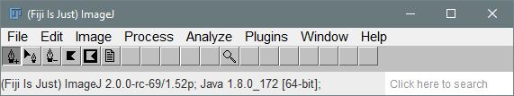
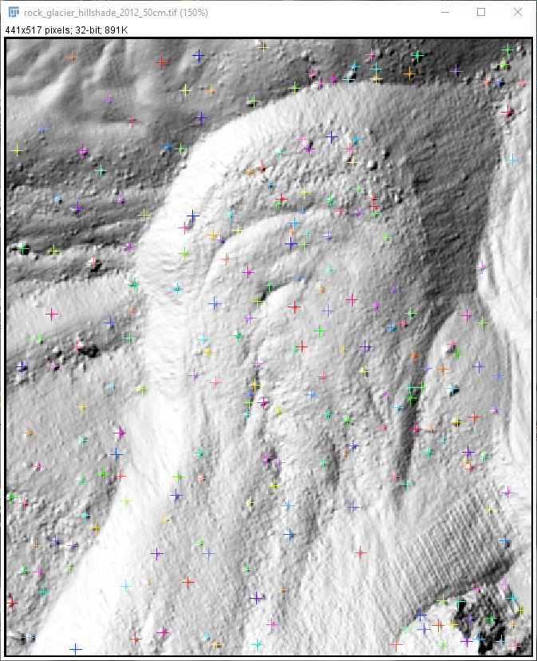
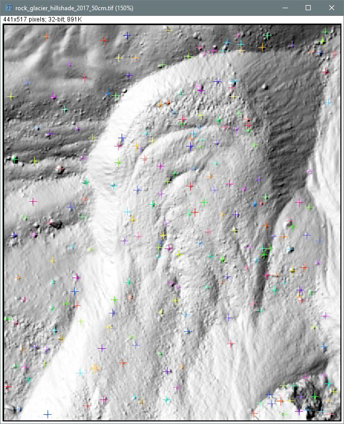
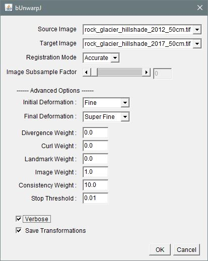

BUnwarpJ image registration with DEMs
Jason Goetz
2020-10-01
1_BUnwarpJ_image_registration.RmdThis vigenette is a short tutorial showing how to apply the BUnwarpJ plugin for performing image registration to digital elevation models (DEMs). An image registration maps the transformation of each pixel from a source image to a target image. In this example, we are mapping the sufrace displacement patterns of an active rock glacier using high-resolution (0.50 m x 0.50 m) DEMs.
Install Fiji
Start by downloading and installing the open-source image processing software Fiji https://fiji.sc/, which already includes the BUnwarpJ plugin installed.
Open hillshade models
We will use hillshade models derived from the DEMs to perform the registration. By using hillshade models, it is much easier for us to identify landmarks (i.e. boulders) that can help assist in the registration process.
In Fiji, go to File > Open to load the hillshade models.
We need to remember the order the hillshade models were opened. The images need to be opened in this order when re-opening Fiji to continue working on a project. We will first open rock_glacier_hillshade_2012_50cm.tif and then ock_glacier_hillshade_2017_50cm.tif.
Note: Fiji may have trouble opening a GEOTIFF. It may appear as a blank (i.e. black) image when opened. To get around this, we can convert it to a PNG image format. We can use IrfanView to do this, just make sure to save with no compression. As long as the row and columns are consistent with the original GEOTIFF, we will have no problem transforming the resulting displacement map to local coordinate reference system.


Open bunwarpJ plugin and map landmarks
Now we will will open the bUnwarpJ plugin for performing non-rigid image registration using b-splines,
Plugins > Registration > bUnwarpJ
Similar to georeferencing images in a GIS, we will map landmarks in the 2012 and 2017 hillshade models to help with the registration process. For the rock glaicer, we will map landmarks in active and stable areas of the scene.



Save landmarks
Don’t forget to save the landmarks we just mapped,
I/O Menu > Save Landmarks As…
We should use a filename to remember the direction of mapping, e.g., Landmarks_source2012_to_target2017.txt.

Note: When loading landmarks, make sure that source image is the 2012 hillshade and the target image is the 2017 hillshade, otherwise the landmarks will not be positioned correctly.
Run registration
Now we can run the registration. We can use the following settings. By mapping/loading landmarks, they will be automatically used for the registration.

A Save transformation task will pop up when registration is complete.
Convert transformation to RAW
This transformation file can be opened in R.
Select I/O Menu > Convert Transformation to RAW
- First select the transformation file
- Write the filename – can be confusing because it says OPEN instead of convert/save


Now we can use R for transforming the image registration to a local CRS and visualizing the mapped surface displacement results.